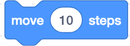
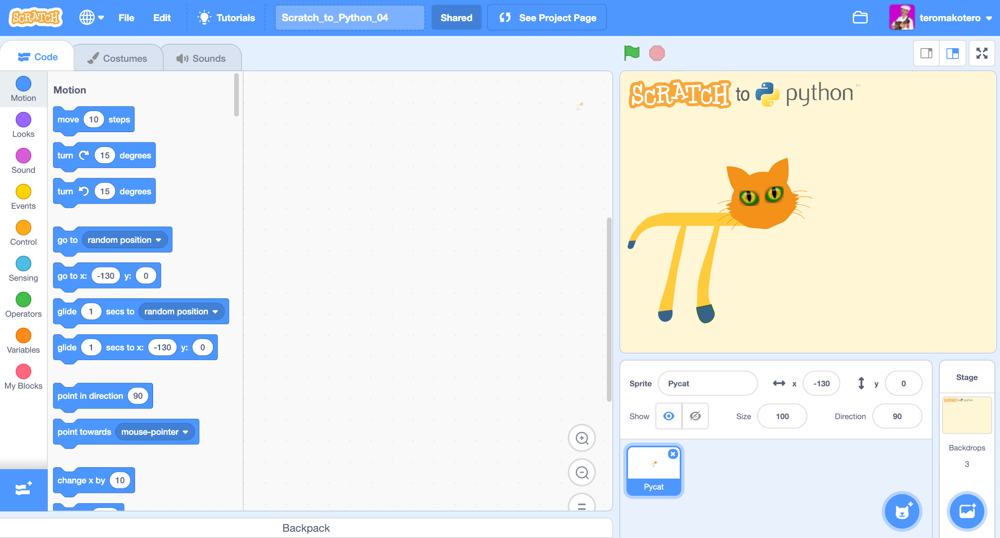

Loop Challenges
Challenge Scratch_to_Python_03
In this challenge we will learn how to make Pycat dance forever. You will learn how to move Pycat back and forth. You learn to use an infinite loop.
In this challenge, we use the Player Learning method. You can come up with a solution through trials and mistakes. The method of trial and error is one of the basic methods for solving a problem.
Instructions
- Drag two  from the Command area to the Code area.
- Drag the block
 from the Events Blocks to the Code Area.
from the Events Blocks to the Code Area. - Drag the block
 from the Control Blocks to the Code Area.
from the Control Blocks to the Code Area. - Drag two blocks from the Control Blocks to the Code Area.
- Find out how to get Pycat to move back and forth.
- Combine the blocks in the correct order.
- Click on the green flag above the scene.
Challenge 03
You come to the challenge either by clicking on the heading "Challenge 03" or on the picture of the challenge.
Link to challenge Scratch_to_Python_03 file.Video showing the solution to the Scratch_to_Python_03 challenge
Challenge Scratch_to_Python_04
This challenge teaches you how to make an animation. This is the most challenging task so far.
In this challenge, we use the Player Learning method. The feeling of frustration and irritation is an important part of the learning process in a difficult challenge.
The challenge is to animate Pycat so that it walks from left to right on the stage.
When performing this task, you understand the principle of how to make animations with Scratch.
Instructions
- Use the skills you have learned so far to solve the task.
- Tip: The Sprite (Pycat) has two costumes in this task (click the Costumes Tab to see them). You animate the figure by repeatedly changing costumes and moving the Sprite.
- Pycat returns to its starting position with space bar.
Challenge 04
You come to the challenge either by clicking on the heading "Challenge 04" or on the picture of the challenge.
 Link to challenge Scratch_to_Python_04 file.Video showing the solution to the Scratch_to_Python_04 challenge
Challenge Scratch_to_Python_05
In this challenge you will learn how to increase the interactivity of the project. The challenge is to make a program that asks three times "What is your name?" and show "Hello" and the name in a speech bubble every time .
Instructions
- Drag the block from the Events Blocks to the Code area.
- Drag the block from the Sensing Blocks to the Code Area.
- Drag from the Sensing Blocks to the Code Area.
- From the Operators Blocks, drag to the Code Area.
- From the Costumes Blocks,
 drag to the Code Area.
drag to the Code Area. - Drag the block from the Control Blocks to the Code Area.
- Change to the appropriate text content in the blocks. Think how you get a space before the name in the greeting.
- Combine the blocks in the correct order.
- Use the green flag to see if the program succeeded.
Challenge 05
You come to the challenge either by clicking on the heading "Challenge 05" or on the picture of the challenge.
Link to challenge Scratch_to_Python_05 file.